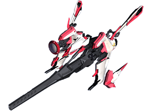
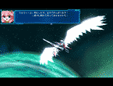
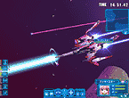
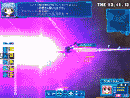

|
   |
|||
| ●ラッキースターの特徴 |
| 紋章機１番機。バランスの良い万能紋章機。 ビーム砲、ミサイル、レーザーファランクスを装備し、攻撃防御に優れた万能の機体に見えるが、機体の安定性が極端に悪い。ミルフィーユの強運＆凶運が作用しているのかいないのか、ミルフィーユ以外の人にはとても扱えるシロモノではないらしい。 パイロットの気力が充実していると、中央の砲身より大出力ビームが発射できる。通称「ハイパーキャノン」。 |
© BROCCOLI